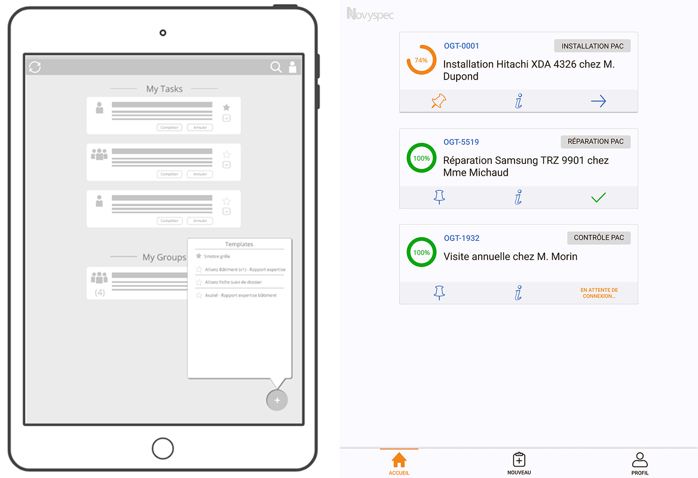

Balayage visuel
Balayage visuel du corps avec ses EPI, et analyse d'image.
RésultatManipulations de la tablette inconfortables pour les testeurs.
Industrie · Inspection terrain · 2017 — 2018
Une application d'inspection industrielle conçue à partir d'une feuille blanche — et mon pivot de la tech vers le produit et le design.

verticales métier qualifiées
conçue de A à Z
transformation de l'équipe
01
Après plusieurs années dans des fonctions techniques, Novyspec m'accorde sa confiance pour mener la conception de sa nouvelle application d'inspection industrielle, en parallèle de ma formation UX Design aux Gobelins.
L'équipe venait d'un produit similaire, mais d'une technologie obsolète et sans approche centrée sur l'utilisateur. Nous devions développer une nouvelle solution, en repartant d'une feuille blanche.
Pourquoi ce projet compteCe produit n'a pas vu le jour, mais il m'a donné les fondations pour réussir ensuite chez Smart-Rx et Meditect.
02
Mettre en place la bonne méthodologie et les bons outils pour concevoir le produit avec une approche produit et design rigoureuse, au sein d'une équipe très orientée tech.
Concevoir une application d'inspection industrielle moderne, pensée pour les entreprises, et capable d'interagir avec son écosystème d'objets connectés.
03
L'équipe ayant déjà réalisé une solution d'inspection industrielle, mon objectif était de l'aider à formaliser la connaissance utilisateur acquise. Pour que tout le monde soit au même niveau, et parce que nous n'avions pas accès aux utilisateurs au démarrage du projet.
Un atelier de 2 heures nous a permis de consolider la connaissance acquise pendant plusieurs années.
Un modèle d'empathy map a été distribué à chaque membre de l'équipe, ainsi que des post-it.
La mise en commun des post-it a permis de regrouper les informations et de définir notre persona « inspecteur ».
Choix d'une librairie UI. Nos critères : compatible ReactJs, maintenue, communauté active, documentation claire et personnalisable. Candidates : Semantic UI, Material UI et Ant Design. Notre choix : Ant Design.
Design system : un design system préliminaire, mené en parallèle de la conception du produit, sur la base de la couleur orange du logo de Novyspec.
L'application s'appuie sur la connaissance accumulée par l'équipe avec la solution précédente. Le userflow présente le fonctionnement général ; les écrans vides accueillent les formulaires métiers.
La validation d'une tâche se fait en 2 temps : Complete, puis Validate. Cette friction volontaire évite les erreurs de manipulation induites par les interfaces tactiles.
Seuls les formulaires d'inspection sont spécifiques à un métier. J'ai sollicité des utilisateurs « proxies » pour concevoir une tâche telle qu'elle apparaît dans l'application.
Avec des éléments de UI papier, ils proposaient ce qui faisait sens pour eux dans une « tâche ».
Après mise en commun des propositions, j'avais les éléments nécessaires pour concevoir une tâche.
Les wireframes ont nourri la réflexion sur le parcours : ici la vue des tâches et une tâche ouverte.
Ils ont été animés dans un prototype InVision, et testés avec des utilisateurs « proxies ».
Les résultats des tests des wireframes ont été analysés et intégrés dans la conception finale.
Le concepteur de formulaire définit le contenu des campagnes d'inspection. Il n'est utilisé qu'au bureau.
Une session d'idéation selon le modèle 6-to-1 a dégagé des pistes pour le design final des écrans.
Une étude d'environ 3 mois, menée dans le cadre de mon mémoire professionnel aux Gobelins.
04
Une phase d'exploration des opportunités de marché : plusieurs verticales métier étudiées, dont deux présentées ici.
Verticale 1
J'ai suivi pendant une matinée Ludovic, chargé de vérifier la conformité des climatiseurs industriels en sortie de chaîne de fabrication.
Avec les informations collectées, j'ai modélisé le user journey de Ludovic, et présenté ce parcours à l'équipe.
Fin du projet. Notre produit aurait pu grandement améliorer l'efficacité du travail de Ludovic, mais aucun budget n'était disponible.
Verticale 2
Avec une consultante experte de l'usine, nous devions proposer une solution pour contrôler la prestation de nettoyage, qui change (fréquence, opérations, produits) au gré de la production.
Modélisation des enjeux du nettoyage dans l'usine. Plusieurs échanges avec la consultante ont été nécessaires pour comprendre les flux d'information et les besoins de l'entreprise.
Une tablette dans chaque salle à nettoyer, un bracelet NFC pour chaque opérateur :
Fin du projet. L'usine a refusé ce scénario par crainte d'une contamination bactérienne induite par l'introduction de tablettes dans les salles à nettoyer.
05
06
Appliquée ensuite avec succès chez Smart-Rx et Meditect.
Une capacité qui m'a beaucoup servi chez Meditect.
Avant de passer à la technique.
Pourquoi l'échec ? Une équipe déjà expérimentée sur une solution de niche proche pouvait faire croire que cette offre répondait à un problème. Les verticales explorées avaient de réels besoins, mais pas le budget pour lancer le produit.
La leçonLa discovery ne sert pas qu'à concevoir : elle sert d'abord à explorer s'il y a un marché pour résoudre le problème identifié.